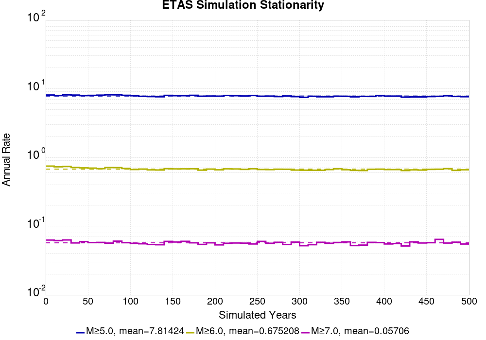

Start 2012, 500 yr, kCOV=1.16, Spontaneous, Historical Catalog Results
| Start 2012, 500 yr, kCOV=1.16, Spontaneous, Historical Catalog |
|---|
| Num Simulations | 121 (incomplete) |
| Start Time | 2012/01/01 00:00:00 UTC |
| Start Time Epoch Milliseconds | 1325376000000 |
| Duration | 500 Years |
| Includes Spontaneous? | true |
| Trigger Ruptures | (none) |
| Historical Ruptures | 60366 Trigger Ruptures |
| First: M7.3 at 1852/01/05 04:40:39 UTC |
| Last: M3.2 at 2011/12/31 19:14:44 UTC |
| Largest: M7.9 at 1857/01/09 16:25:39 UTC |
| Config Generated With | u3etas_config_builder.sh --start-year 2012 --num-simulations 1000 --duration-years 500 --include-spontaneous --historical-catalog --etas-k-cov 1.16 --hpc-site USC_HPC --nodes 36 --hours 24 --queue scec |
Table Of Contents
Magnitude Frequency Distribution
(top)
Legend
- Mean (thick black line): mean annual rate across all 121 catalogs
- 2.5%,97.5% (thin black lines): annual rate percentiles across all 121 catalogs
- Median (thin blue line): median annual rate across all 121 catalogs
- Mode (thin cyan line): modal annual rate across all 121 catalogs (scaled to annualized value)
- 500 yr Probability (thin red line): 500 year probability calculated as the fraction of catalogs with at least 1 occurrence
- 500 yr Supraseismogenic Probability (thin dashed red line): same as above, but only for supraseismogenic ruptures on explicitly modeled UCERF3 faults
- 95% Conf (light red shaded region): binomial 95% confidence bounds on probability

| Mag | Mean | 2.5 %ile | 97.5 %ile | Median | Mode | 500 yr Probability | 500 yr Supra-Seis Prob |
|---|
| M≥5 | 7.423 | 6.496 | 8.608 | 7.372 | 6.852 | 1.000 (100.00%) | 1.000 (100.00%) |
| M≥5.1 | 5.865 | 5.106 | 6.830 | 5.852 | 5.772 | 1.000 (100.00%) | 1.000 (100.00%) |
| M≥5.2 | 4.625 | 4.004 | 5.380 | 4.622 | 4.662 | 1.000 (100.00%) | 1.000 (100.00%) |
| M≥5.3 | 3.646 | 3.172 | 4.308 | 3.620 | 3.806 | 1.000 (100.00%) | 1.000 (100.00%) |
| M≥5.4 | 2.871 | 2.488 | 3.408 | 2.850 | 2.764 | 1.000 (100.00%) | 1.000 (100.00%) |
| M≥5.5 | 2.255 | 1.968 | 2.622 | 2.238 | 2.372 | 1.000 (100.00%) | 1.000 (100.00%) |
| M≥5.6 | 1.767 | 1.542 | 2.066 | 1.756 | 1.724 | 1.000 (100.00%) | 1.000 (100.00%) |
| M≥5.7 | 1.372 | 1.198 | 1.572 | 1.366 | 1.346 | 1.000 (100.00%) | 1.000 (100.00%) |
| M≥5.8 | 1.062 | 0.932 | 1.228 | 1.052 | 1.052 | 1.000 (100.00%) | 1.000 (100.00%) |
| M≥5.9 | 0.808 | 0.712 | 0.918 | 0.800 | 0.806 | 1.000 (100.00%) | 1.000 (100.00%) |
| M≥6 | 0.637 | 0.574 | 0.718 | 0.628 | 0.616 | 1.000 (100.00%) | 1.000 (100.00%) |
| M≥6.1 | 0.489 | 0.440 | 0.556 | 0.486 | 0.494 | 1.000 (100.00%) | 1.000 (100.00%) |
| M≥6.2 | 0.385 | 0.342 | 0.434 | 0.380 | 0.368 | 1.000 (100.00%) | 1.000 (100.00%) |
| M≥6.3 | 0.303 | 0.266 | 0.348 | 0.302 | 0.300 | 1.000 (100.00%) | 1.000 (100.00%) |
| M≥6.4 | 0.239 | 0.202 | 0.278 | 0.238 | 0.246 | 1.000 (100.00%) | 1.000 (100.00%) |
| M≥6.5 | 0.186 | 0.156 | 0.218 | 0.184 | 0.188 | 1.000 (100.00%) | 1.000 (100.00%) |
| M≥6.6 | 0.145 | 0.122 | 0.170 | 0.144 | 0.146 | 1.000 (100.00%) | 1.000 (100.00%) |
| M≥6.7 | 0.112 | 0.094 | 0.140 | 0.112 | 0.112 | 1.000 (100.00%) | 1.000 (100.00%) |
| M≥6.8 | 0.087 | 0.072 | 0.112 | 0.088 | 0.090 | 1.000 (100.00%) | 1.000 (100.00%) |
| M≥6.9 | 0.068 | 0.048 | 0.088 | 0.068 | 0.072 | 1.000 (100.00%) | 1.000 (100.00%) |
| M≥7 | 0.054 | 0.038 | 0.070 | 0.054 | 0.054 | 1.000 (100.00%) | 1.000 (100.00%) |
| M≥7.1 | 0.041 | 0.026 | 0.054 | 0.040 | 0.044 | 1.000 (100.00%) | 1.000 (100.00%) |
| M≥7.2 | 0.031 | 0.020 | 0.044 | 0.032 | 0.032 | 1.000 (100.00%) | 1.000 (100.00%) |
| M≥7.3 | 0.025 | 0.016 | 0.036 | 0.026 | 0.026 | 1.000 (100.00%) | 1.000 (100.00%) |
| M≥7.4 | 0.020 | 0.012 | 0.030 | 0.020 | 0.020 | 1.000 (100.00%) | 1.000 (100.00%) |
| M≥7.5 | 0.014 | 8.00E-3 | 0.022 | 0.014 | 0.012 | 1.000 (100.00%) | 1.000 (100.00%) |
| M≥7.6 | 0.011 | 6.00E-3 | 0.018 | 0.010 | 0.010 | 1.000 (100.00%) | 1.000 (100.00%) |
| M≥7.7 | 7.75E-3 | 4.00E-3 | 0.012 | 8.00E-3 | 8.00E-3 | 1.000 (100.00%) | 1.000 (100.00%) |
| M≥7.8 | 5.42E-3 | 2.00E-3 | 0.010 | 6.00E-3 | 6.00E-3 | 0.992 (99.17%) | 0.992 (99.17%) |
| M≥7.9 | 3.01E-3 | 0.000 | 6.00E-3 | 2.00E-3 | 2.00E-3 | 0.876 (87.60%) | 0.876 (87.60%) |
| M≥8 | 1.87E-3 | 0.000 | 4.00E-3 | 2.00E-3 | 2.00E-3 | 0.702 (70.25%) | 0.702 (70.25%) |
| M≥8.1 | 7.60E-4 | 0.000 | 2.00E-3 | 0.000 | 0.000 | 0.380 (38.02%) | 0.380 (38.02%) |
| M≥8.2 | 3.80E-4 | 0.000 | 2.00E-3 | 0.000 | 0.000 | 0.190 (19.01%) | 0.190 (19.01%) |
| M≥8.3 | 8.26E-5 | 0.000 | 2.00E-3 | 0.000 | 0.000 | 0.041 (4.13%) | 0.041 (4.13%) |
| M≥8.4 | 0.000 | 0.000 | 0.000 | 0.000 | 0.000 | 0.000 (0.00%) | 0.000 (0.00%) |
| M≥8.5 | 0.000 | 0.000 | 0.000 | 0.000 | 0.000 | 0.000 (0.00%) | 0.000 (0.00%) |
| M≥8.6 | 0.000 | 0.000 | 0.000 | 0.000 | 0.000 | 0.000 (0.00%) | 0.000 (0.00%) |
| M≥8.7 | 0.000 | 0.000 | 0.000 | 0.000 | 0.000 | 0.000 (0.00%) | 0.000 (0.00%) |
| M≥8.8 | 0.000 | 0.000 | 0.000 | 0.000 | 0.000 | 0.000 (0.00%) | 0.000 (0.00%) |
| M≥8.9 | 0.000 | 0.000 | 0.000 | 0.000 | 0.000 | 0.000 (0.00%) | 0.000 (0.00%) |
| M≥9 | 0.000 | 0.000 | 0.000 | 0.000 | 0.000 | 0.000 (0.00%) | 0.000 (0.00%) |
Long Term Rate Variability
(top)
162 Year Variability
(top)

Download CSV Here
| Magnitude | Mean | Median | Mode | Std. Dev. | 2.5 %-ile | 16 %-ile | 84 %-ile | 97.5 %-ile |
|---|
| 5.0 | 7.431606 | 7.2469134 | 6.691358 | 0.96871185 | 5.9938273 | 6.5185184 | 8.240741 | 9.746914 |
| 5.1 | 5.871748 | 5.759259 | 6.148148 | 0.7592653 | 4.7469134 | 5.1358023 | 6.5246916 | 7.6728396 |
| 5.2 | 4.6299696 | 4.537037 | 4.759259 | 0.5974711 | 3.7407408 | 4.0617285 | 5.1296296 | 6.067901 |
| 5.3 | 3.6502228 | 3.574074 | 3.3024693 | 0.4715348 | 2.9382715 | 3.2160494 | 4.0555553 | 4.759259 |
| 5.4 | 2.8745196 | 2.8148148 | 2.728395 | 0.37489393 | 2.3271606 | 2.5308642 | 3.2098765 | 3.771605 |
| 5.5 | 2.2575417 | 2.2098765 | 2.0432098 | 0.2925868 | 1.8271605 | 1.9876543 | 2.5185184 | 2.9382715 |
| 5.6 | 1.7680849 | 1.7407408 | 1.8209877 | 0.22677651 | 1.4074074 | 1.5493827 | 1.9691358 | 2.271605 |
| 5.7 | 1.3732612 | 1.3641975 | 1.2901235 | 0.17813241 | 1.0802469 | 1.2037038 | 1.5432099 | 1.8148148 |
| 5.8 | 1.0623406 | 1.0493827 | 1.0123457 | 0.13755007 | 0.83950615 | 0.9259259 | 1.1851852 | 1.3765432 |
| 5.9 | 0.8083699 | 0.80246913 | 0.7839506 | 0.10692228 | 0.6296296 | 0.7037037 | 0.9074074 | 1.0493827 |
| 6.0 | 0.63677174 | 0.6296296 | 0.6419753 | 0.08476574 | 0.5 | 0.5555556 | 0.7160494 | 0.8271605 |
| 6.1 | 0.48915076 | 0.48765433 | 0.5 | 0.070407115 | 0.37037036 | 0.41975307 | 0.5555556 | 0.6481481 |
| 6.2 | 0.3855219 | 0.38271606 | 0.38271606 | 0.057789914 | 0.29012346 | 0.3271605 | 0.44444445 | 0.50617284 |
| 6.3 | 0.30321735 | 0.2962963 | 0.2962963 | 0.047413 | 0.22222222 | 0.25925925 | 0.35185185 | 0.40123457 |
| 6.4 | 0.23904024 | 0.24074075 | 0.24691358 | 0.038019355 | 0.16666667 | 0.2037037 | 0.2777778 | 0.30864197 |
| 6.5 | 0.18615447 | 0.18518518 | 0.2037037 | 0.03374779 | 0.12962963 | 0.15432099 | 0.21604939 | 0.25308642 |
| 6.6 | 0.1449512 | 0.14197531 | 0.14197531 | 0.029103003 | 0.09876543 | 0.11728395 | 0.17283951 | 0.20987654 |
| 6.7 | 0.11192735 | 0.11111111 | 0.11111111 | 0.024843616 | 0.06790123 | 0.086419754 | 0.13580246 | 0.17283951 |
| 6.8 | 0.08715097 | 0.086419754 | 0.086419754 | 0.021279488 | 0.049382716 | 0.06790123 | 0.10493827 | 0.13580246 |
| 6.9 | 0.06790123 | 0.06790123 | 0.055555556 | 0.01846159 | 0.037037037 | 0.049382716 | 0.086419754 | 0.11111111 |
| 7.0 | 0.053378906 | 0.055555556 | 0.055555556 | 0.016443769 | 0.024691358 | 0.037037037 | 0.06790123 | 0.09259259 |
| 7.1 | 0.04067612 | 0.043209877 | 0.037037037 | 0.014559391 | 0.012345679 | 0.024691358 | 0.055555556 | 0.074074075 |
| 7.2 | 0.031153284 | 0.030864198 | 0.024691358 | 0.012507482 | 0.012345679 | 0.018518519 | 0.043209877 | 0.061728396 |
| 7.3 | 0.024895418 | 0.024691358 | 0.018518519 | 0.011348828 | 0.0061728396 | 0.012345679 | 0.037037037 | 0.049382716 |
| 7.4 | 0.019623848 | 0.018518519 | 0.012345679 | 0.009751273 | 0.0061728396 | 0.012345679 | 0.030864198 | 0.037037037 |
| 7.5 | 0.014539333 | 0.012345679 | 0.012345679 | 0.0075890375 | 0.0 | 0.0061728396 | 0.024691358 | 0.030864198 |
| 7.6 | 0.011070299 | 0.012345679 | 0.012345679 | 0.006517105 | 0.0 | 0.0061728396 | 0.018518519 | 0.024691358 |
| 7.7 | 0.007788321 | 0.0061728396 | 0.0061728396 | 0.0053521106 | 0.0 | 0.0 | 0.012345679 | 0.018518519 |
| 7.8 | 0.005458627 | 0.0061728396 | 0.0061728396 | 0.004736567 | 0.0 | 0.0 | 0.012345679 | 0.018518519 |
| 7.9 | 0.0030609122 | 0.0 | 0.0 | 0.0036525324 | 0.0 | 0.0 | 0.0061728396 | 0.012345679 |
| 8.0 | 0.0019045676 | 0.0 | 0.0 | 0.003068352 | 0.0 | 0.0 | 0.0061728396 | 0.0061728396 |
| 8.1 | 7.6522806E-4 | 0.0 | 0.0 | 0.002037029 | 0.0 | 0.0 | 0.0 | 0.0061728396 |
| 8.2 | 3.741115E-4 | 0.0 | 0.0 | 0.0014749113 | 0.0 | 0.0 | 0.0 | 0.0061728396 |
| 8.3 | 6.802027E-5 | 0.0 | 0.0 | 6.452895E-4 | 0.0 | 0.0 | 0.0 | 0.0 |
| 8.4 | 0.0 | 0.0 | 0.0 | 0.0 | 0.0 | 0.0 | 0.0 | 0.0 |
| 8.5 | 0.0 | 0.0 | 0.0 | 0.0 | 0.0 | 0.0 | 0.0 | 0.0 |
| 8.6 | 0.0 | 0.0 | 0.0 | 0.0 | 0.0 | 0.0 | 0.0 | 0.0 |
| 8.7 | 0.0 | 0.0 | 0.0 | 0.0 | 0.0 | 0.0 | 0.0 | 0.0 |
| 8.8 | 0.0 | 0.0 | 0.0 | 0.0 | 0.0 | 0.0 | 0.0 | 0.0 |
| 8.9 | 0.0 | 0.0 | 0.0 | 0.0 | 0.0 | 0.0 | 0.0 | 0.0 |
| 9.0 | 0.0 | 0.0 | 0.0 | 0.0 | 0.0 | 0.0 | 0.0 | 0.0 |
80 Year Variability
(top)

Download CSV Here
| Magnitude | Mean | Median | Mode | Std. Dev. | 2.5 %-ile | 16 %-ile | 84 %-ile | 97.5 %-ile |
|---|
| 5.0 | 7.436312 | 7.15 | 6.825 | 1.4114239 | 5.6625 | 6.2375 | 8.6125 | 10.9875 |
| 5.1 | 5.8755684 | 5.65 | 5.325 | 1.1114674 | 4.4 | 4.9375 | 6.7625 | 8.6125 |
| 5.2 | 4.6325583 | 4.4375 | 4.375 | 0.8815706 | 3.475 | 3.875 | 5.35 | 6.9 |
| 5.3 | 3.6526344 | 3.5125 | 3.275 | 0.69345844 | 2.725 | 3.05 | 4.2625 | 5.5125 |
| 5.4 | 2.876274 | 2.775 | 2.7 | 0.54974496 | 2.1375 | 2.4 | 3.3375 | 4.2875 |
| 5.5 | 2.258953 | 2.1875 | 1.9875 | 0.42831606 | 1.6375 | 1.8875 | 2.625 | 3.3625 |
| 5.6 | 1.7688017 | 1.725 | 1.8125 | 0.3310021 | 1.3 | 1.475 | 2.0375 | 2.625 |
| 5.7 | 1.3735538 | 1.325 | 1.3 | 0.2585988 | 1.0125 | 1.1375 | 1.6 | 2.0125 |
| 5.8 | 1.0627239 | 1.0375 | 1.05 | 0.20124118 | 0.75 | 0.875 | 1.25 | 1.55 |
| 5.9 | 0.8083161 | 0.7875 | 0.7625 | 0.15522069 | 0.55 | 0.6625 | 0.95 | 1.2 |
| 6.0 | 0.6371901 | 0.625 | 0.6125 | 0.12420051 | 0.4375 | 0.5125 | 0.75 | 0.9375 |
| 6.1 | 0.4894456 | 0.475 | 0.475 | 0.10368991 | 0.325 | 0.3875 | 0.5875 | 0.7375 |
| 6.2 | 0.38589877 | 0.375 | 0.4125 | 0.08542627 | 0.2375 | 0.3 | 0.4625 | 0.575 |
| 6.3 | 0.30346075 | 0.3 | 0.275 | 0.0712683 | 0.175 | 0.225 | 0.375 | 0.45 |
| 6.4 | 0.2392562 | 0.2375 | 0.225 | 0.059265748 | 0.1375 | 0.175 | 0.3 | 0.3625 |
| 6.5 | 0.18648416 | 0.1875 | 0.2125 | 0.050956804 | 0.1 | 0.1375 | 0.2375 | 0.2875 |
| 6.6 | 0.14517906 | 0.1375 | 0.125 | 0.044745475 | 0.075 | 0.1 | 0.1875 | 0.2375 |
| 6.7 | 0.112155646 | 0.1125 | 0.1125 | 0.038207263 | 0.05 | 0.075 | 0.15 | 0.2 |
| 6.8 | 0.087310605 | 0.0875 | 0.075 | 0.032078948 | 0.0375 | 0.05 | 0.1125 | 0.1625 |
| 6.9 | 0.06806129 | 0.0625 | 0.0625 | 0.027579416 | 0.025 | 0.0375 | 0.0875 | 0.1375 |
| 7.0 | 0.05356405 | 0.05 | 0.0375 | 0.024131373 | 0.0125 | 0.025 | 0.075 | 0.1125 |
| 7.1 | 0.040823 | 0.0375 | 0.0375 | 0.021554327 | 0.0 | 0.025 | 0.0625 | 0.0875 |
| 7.2 | 0.03126722 | 0.025 | 0.025 | 0.018543394 | 0.0 | 0.0125 | 0.05 | 0.075 |
| 7.3 | 0.024965566 | 0.025 | 0.025 | 0.016815392 | 0.0 | 0.0125 | 0.0375 | 0.0625 |
| 7.4 | 0.01969697 | 0.0125 | 0.0125 | 0.0147488555 | 0.0 | 0.0 | 0.0375 | 0.05 |
| 7.5 | 0.014617769 | 0.0125 | 0.0125 | 0.012178284 | 0.0 | 0.0 | 0.025 | 0.0375 |
| 7.6 | 0.011139807 | 0.0125 | 0.0125 | 0.010238572 | 0.0 | 0.0 | 0.025 | 0.0375 |
| 7.7 | 0.007816805 | 0.0125 | 0.0 | 0.008586448 | 0.0 | 0.0 | 0.0125 | 0.025 |
| 7.8 | 0.005492424 | 0.0 | 0.0 | 0.0073231054 | 0.0 | 0.0 | 0.0125 | 0.025 |
| 7.9 | 0.0030991735 | 0.0 | 0.0 | 0.005749286 | 0.0 | 0.0 | 0.0125 | 0.0125 |
| 8.0 | 0.0019283746 | 0.0 | 0.0 | 0.0046126177 | 0.0 | 0.0 | 0.0 | 0.0125 |
| 8.1 | 7.747934E-4 | 0.0 | 0.0 | 0.003016147 | 0.0 | 0.0 | 0.0 | 0.0125 |
| 8.2 | 3.7878787E-4 | 0.0 | 0.0 | 0.0021442252 | 0.0 | 0.0 | 0.0 | 0.0125 |
| 8.3 | 6.8870526E-5 | 0.0 | 0.0 | 9.259154E-4 | 0.0 | 0.0 | 0.0 | 0.0 |
| 8.4 | 0.0 | 0.0 | 0.0 | 0.0 | 0.0 | 0.0 | 0.0 | 0.0 |
| 8.5 | 0.0 | 0.0 | 0.0 | 0.0 | 0.0 | 0.0 | 0.0 | 0.0 |
| 8.6 | 0.0 | 0.0 | 0.0 | 0.0 | 0.0 | 0.0 | 0.0 | 0.0 |
| 8.7 | 0.0 | 0.0 | 0.0 | 0.0 | 0.0 | 0.0 | 0.0 | 0.0 |
| 8.8 | 0.0 | 0.0 | 0.0 | 0.0 | 0.0 | 0.0 | 0.0 | 0.0 |
| 8.9 | 0.0 | 0.0 | 0.0 | 0.0 | 0.0 | 0.0 | 0.0 | 0.0 |
| 9.0 | 0.0 | 0.0 | 0.0 | 0.0 | 0.0 | 0.0 | 0.0 | 0.0 |
28 Year Variability
(top)

Download CSV Here
| Magnitude | Mean | Median | Mode | Std. Dev. | 2.5 %-ile | 16 %-ile | 84 %-ile | 97.5 %-ile |
|---|
| 5.0 | 7.438329 | 6.892857 | 6.714286 | 2.2985485 | 4.964286 | 5.714286 | 9.035714 | 12.678572 |
| 5.1 | 5.8771267 | 5.464286 | 5.214286 | 1.8235508 | 3.8214285 | 4.5 | 7.142857 | 10.035714 |
| 5.2 | 4.6345754 | 4.321429 | 3.75 | 1.4386017 | 3.0 | 3.5357144 | 5.607143 | 7.964286 |
| 5.3 | 3.654212 | 3.4285715 | 3.2857144 | 1.1417085 | 2.2857144 | 2.75 | 4.428571 | 6.25 |
| 5.4 | 2.8775089 | 2.7142856 | 2.6785715 | 0.9030952 | 1.7142857 | 2.142857 | 3.5357144 | 4.928571 |
| 5.5 | 2.260452 | 2.142857 | 2.0714285 | 0.7122582 | 1.3214285 | 1.6785715 | 2.7857144 | 3.857143 |
| 5.6 | 1.7699493 | 1.6785715 | 1.6071428 | 0.55641025 | 1.0357143 | 1.2857143 | 2.2142856 | 3.0357144 |
| 5.7 | 1.3742621 | 1.2857143 | 1.1428572 | 0.43532848 | 0.75 | 1.0 | 1.7142857 | 2.392857 |
| 5.8 | 1.0632856 | 1.0 | 0.89285713 | 0.33667192 | 0.5714286 | 0.75 | 1.3571428 | 1.8214285 |
| 5.9 | 0.8089277 | 0.78571427 | 0.6785714 | 0.2629837 | 0.39285713 | 0.5714286 | 1.0357143 | 1.3928572 |
| 6.0 | 0.6378221 | 0.60714287 | 0.60714287 | 0.21158655 | 0.2857143 | 0.42857143 | 0.8214286 | 1.1071428 |
| 6.1 | 0.48986042 | 0.4642857 | 0.5 | 0.17535351 | 0.21428572 | 0.32142857 | 0.64285713 | 0.85714287 |
| 6.2 | 0.38620737 | 0.35714287 | 0.32142857 | 0.14553683 | 0.14285715 | 0.25 | 0.53571427 | 0.71428573 |
| 6.3 | 0.30387527 | 0.2857143 | 0.2857143 | 0.12229591 | 0.10714286 | 0.17857143 | 0.42857143 | 0.5714286 |
| 6.4 | 0.23951316 | 0.21428572 | 0.21428572 | 0.10422135 | 0.071428575 | 0.14285715 | 0.35714287 | 0.4642857 |
| 6.5 | 0.18664491 | 0.17857143 | 0.14285715 | 0.08941723 | 0.035714287 | 0.10714286 | 0.2857143 | 0.39285713 |
| 6.6 | 0.14537469 | 0.14285715 | 0.10714286 | 0.07687824 | 0.035714287 | 0.071428575 | 0.21428572 | 0.32142857 |
| 6.7 | 0.112316824 | 0.10714286 | 0.10714286 | 0.065078855 | 0.0 | 0.035714287 | 0.17857143 | 0.25 |
| 6.8 | 0.087384544 | 0.071428575 | 0.071428575 | 0.057235394 | 0.0 | 0.035714287 | 0.14285715 | 0.21428572 |
| 6.9 | 0.06814709 | 0.071428575 | 0.035714287 | 0.04963809 | 0.0 | 0.035714287 | 0.10714286 | 0.17857143 |
| 7.0 | 0.05366692 | 0.035714287 | 0.035714287 | 0.043671586 | 0.0 | 0.0 | 0.10714286 | 0.14285715 |
| 7.1 | 0.040905617 | 0.035714287 | 0.035714287 | 0.038518474 | 0.0 | 0.0 | 0.071428575 | 0.14285715 |
| 7.2 | 0.03126953 | 0.035714287 | 0.0 | 0.033269394 | 0.0 | 0.0 | 0.071428575 | 0.10714286 |
| 7.3 | 0.02494965 | 0.035714287 | 0.0 | 0.029545877 | 0.0 | 0.0 | 0.035714287 | 0.10714286 |
| 7.4 | 0.019740954 | 0.0 | 0.0 | 0.026224278 | 0.0 | 0.0 | 0.035714287 | 0.071428575 |
| 7.5 | 0.014653795 | 0.0 | 0.0 | 0.022440296 | 0.0 | 0.0 | 0.035714287 | 0.071428575 |
| 7.6 | 0.0111639695 | 0.0 | 0.0 | 0.019517131 | 0.0 | 0.0 | 0.035714287 | 0.071428575 |
| 7.7 | 0.007813043 | 0.0 | 0.0 | 0.01597882 | 0.0 | 0.0 | 0.035714287 | 0.035714287 |
| 7.8 | 0.005486492 | 0.0 | 0.0 | 0.01340051 | 0.0 | 0.0 | 0.0 | 0.035714287 |
| 7.9 | 0.0030904924 | 0.0 | 0.0 | 0.010287648 | 0.0 | 0.0 | 0.0 | 0.035714287 |
| 8.0 | 0.0019272171 | 0.0 | 0.0 | 0.00807135 | 0.0 | 0.0 | 0.0 | 0.035714287 |
| 8.1 | 7.6394196E-4 | 0.0 | 0.0 | 0.005168464 | 0.0 | 0.0 | 0.0 | 0.0 |
| 8.2 | 3.6460866E-4 | 0.0 | 0.0 | 0.0035909703 | 0.0 | 0.0 | 0.0 | 0.0 |
| 8.3 | 6.944927E-5 | 0.0 | 0.0 | 0.0015737573 | 0.0 | 0.0 | 0.0 | 0.0 |
| 8.4 | 0.0 | 0.0 | 0.0 | 0.0 | 0.0 | 0.0 | 0.0 | 0.0 |
| 8.5 | 0.0 | 0.0 | 0.0 | 0.0 | 0.0 | 0.0 | 0.0 | 0.0 |
| 8.6 | 0.0 | 0.0 | 0.0 | 0.0 | 0.0 | 0.0 | 0.0 | 0.0 |
| 8.7 | 0.0 | 0.0 | 0.0 | 0.0 | 0.0 | 0.0 | 0.0 | 0.0 |
| 8.8 | 0.0 | 0.0 | 0.0 | 0.0 | 0.0 | 0.0 | 0.0 | 0.0 |
| 8.9 | 0.0 | 0.0 | 0.0 | 0.0 | 0.0 | 0.0 | 0.0 | 0.0 |
| 9.0 | 0.0 | 0.0 | 0.0 | 0.0 | 0.0 | 0.0 | 0.0 | 0.0 |
Variability Duration Dependence
(top)

Download CSV Here
| Duration (years) | Mean | Median | Mode | Std. Dev. | 2.5 %-ile | 16 %-ile | 84 %-ile | 97.5 %-ile |
|---|
| 1.0 | 7.42281 | 6.0 | 5.0 | 9.611405 | 1.0 | 3.0 | 10.0 | 23.0 |
| 4.0 | 7.42281 | 6.25 | 5.75 | 5.399814 | 3.0 | 4.5 | 9.75 | 19.0 |
| 8.0 | 7.4277024 | 6.5 | 6.25 | 4.0426884 | 3.75 | 4.875 | 9.375 | 16.875 |
| 12.0 | 7.428996 | 6.6666665 | 6.0833335 | 3.3765793 | 4.1666665 | 5.1666665 | 9.25 | 15.166667 |
| 16.0 | 7.4277024 | 6.75 | 5.9375 | 2.9863966 | 4.4375 | 5.375 | 9.1875 | 14.4375 |
| 20.0 | 7.42281 | 6.8 | 6.45 | 2.6840367 | 4.6 | 5.5 | 9.1 | 14.1 |
| 24.0 | 7.436312 | 6.875 | 5.7916665 | 2.4783025 | 4.7083335 | 5.6666665 | 9.083333 | 13.208333 |
| 28.0 | 7.438329 | 6.892857 | 6.714286 | 2.2985485 | 4.964286 | 5.714286 | 9.035714 | 12.678572 |
| 32.0 | 7.436312 | 6.9375 | 5.875 | 2.206839 | 5.03125 | 5.8125 | 8.90625 | 12.6875 |
| 36.0 | 7.4406476 | 6.9722223 | 6.638889 | 2.106927 | 5.0277777 | 5.861111 | 8.861111 | 12.361111 |
| 40.0 | 7.436312 | 6.925 | 6.7 | 1.9631152 | 5.175 | 5.95 | 8.875 | 12.175 |
| 44.0 | 7.4317327 | 6.9772725 | 6.659091 | 1.8707968 | 5.159091 | 5.9772725 | 8.818182 | 11.818182 |
| 48.0 | 7.436312 | 7.0208335 | 6.5 | 1.806854 | 5.2708335 | 6.0208335 | 8.770833 | 11.666667 |
| 52.0 | 7.4406476 | 7.0961537 | 6.826923 | 1.7464178 | 5.269231 | 6.0384617 | 8.711538 | 11.538462 |
| 56.0 | 7.4690266 | 7.089286 | 5.982143 | 1.7169372 | 5.446429 | 6.107143 | 8.75 | 11.732142 |
| 60.0 | 7.436312 | 7.116667 | 6.4666667 | 1.6092758 | 5.4166665 | 6.133333 | 8.716666 | 11.166667 |
| 64.0 | 7.4690266 | 7.125 | 6.765625 | 1.5958151 | 5.5 | 6.15625 | 8.640625 | 11.5625 |
| 68.0 | 7.438329 | 7.1617646 | 7.0882354 | 1.5798708 | 5.470588 | 6.1617646 | 8.6029415 | 10.911765 |
| 72.0 | 7.468511 | 7.1666665 | 7.1805553 | 1.5328612 | 5.4722223 | 6.2222223 | 8.625 | 11.402778 |
| 76.0 | 7.458696 | 7.131579 | 6.9473686 | 1.4836037 | 5.5263157 | 6.2236843 | 8.618421 | 11.407895 |
| 80.0 | 7.436312 | 7.15 | 6.825 | 1.4114239 | 5.6625 | 6.2375 | 8.6125 | 10.9875 |
| 84.0 | 7.4828806 | 7.1904764 | 7.654762 | 1.3938423 | 5.7380953 | 6.321429 | 8.607142 | 10.916667 |
| 88.0 | 7.475113 | 7.181818 | 6.909091 | 1.4274158 | 5.693182 | 6.306818 | 8.602273 | 10.977273 |
| 92.0 | 7.448778 | 7.130435 | 6.945652 | 1.379814 | 5.695652 | 6.304348 | 8.48913 | 11.021739 |
| 96.0 | 7.436312 | 7.1666665 | 6.34375 | 1.332749 | 5.7083335 | 6.34375 | 8.4375 | 11.0625 |
| 100.0 | 7.42281 | 7.18 | 6.85 | 1.2374194 | 5.76 | 6.36 | 8.4 | 10.61 |
| 200.0 | 7.4788637 | 7.28 | 6.945 | 0.9346541 | 6.235 | 6.67 | 8.18 | 9.74 |
| 300.0 | 7.491157 | 7.47 | 7.39 | 0.6338861 | 6.46 | 6.8533335 | 8.11 | 8.62 |
| 400.0 | 7.4788637 | 7.4175 | 7.05 | 0.6358724 | 6.4575 | 6.87 | 8.0475 | 9.075 |
| 500.0 | 7.42281 | 7.372 | 6.852 | 0.5611609 | 6.496 | 6.842 | 7.966 | 8.608 |
Simulation Stationarity
(top)

Section Participation
(top)
Section Participation Plots
(top)
| Min Mag | Complete Catalog (including spontaneous) |
|---|
| All Supra. Seis. |  |
| M≥6.5 |  |
| M≥7 |  |
| M≥7.5 |  |
| M≥8 |  |
Supra-Seismogenic Parent Sections Table
(top)
First 10 of 311 with matching ruptures shown
| Parent Name | Total Mean Annual Rate | Total 500 Year Prob |
|---|
| San Andreas (Parkfield) | 0.040892564 | 1.0 |
| San Andreas (Creeping Section) 2011 CFM | 0.027173555 | 1.0 |
| Mendocino | 0.017768595 | 1.0 |
| San Andreas (Mojave S) | 0.016859503 | 1.0 |
| Cerro Prieto | 0.013603305 | 1.0 |
| Imperial | 0.0106281 | 1.0 |
| Brawley (Seismic Zone) alt 1 | 0.010297521 | 1.0 |
| Hayward (So) 2011 CFM | 0.008776859 | 1.0 |
| San Andreas (Offshore) 2011 CFM | 0.007950413 | 1.0 |
| Elsinore (Glen Ivy) rev | 0.0074710744 | 1.0 |
M≥6.5 Parent Sections Table
(top)
First 10 of 293 with matching ruptures shown
| Parent Name | Total Mean Annual Rate | Total 500 Year Prob |
|---|
| Cerro Prieto | 0.011768595 | 1.0 |
| San Andreas (Creeping Section) 2011 CFM | 0.010495868 | 1.0 |
| Mendocino | 0.009487603 | 1.0 |
| Imperial | 0.0076363636 | 1.0 |
| Brawley (Seismic Zone) alt 1 | 0.007404959 | 1.0 |
| Hayward (So) 2011 CFM | 0.007355372 | 1.0 |
| San Andreas (Santa Cruz Mts) 2011 CFM | 0.0067438018 | 0.9834711 |
| San Andreas (Mojave S) | 0.006661157 | 1.0 |
| San Andreas (San Bernardino N) | 0.0063636363 | 1.0 |
| San Andreas (Cholame) rev | 0.0059669423 | 1.0 |
M≥7 Parent Sections Table
(top)
First 10 of 247 with matching ruptures shown
| Parent Name | Total Mean Annual Rate | Total 500 Year Prob |
|---|
| San Andreas (Creeping Section) 2011 CFM | 0.00646281 | 0.9917355 |
| San Andreas (Carrizo) rev | 0.0056363638 | 1.0 |
| San Andreas (Cholame) rev | 0.0056363638 | 1.0 |
| San Andreas (Mojave S) | 0.005140496 | 1.0 |
| San Andreas (Santa Cruz Mts) 2011 CFM | 0.005140496 | 0.96694213 |
| San Andreas (Mojave N) | 0.0049917353 | 1.0 |
| San Andreas (North Coast) 2011 CFM | 0.004694215 | 1.0 |
| San Andreas (San Bernardino N) | 0.004694215 | 0.9834711 |
| San Andreas (Big Bend) | 0.0045785126 | 1.0 |
| San Andreas (Offshore) 2011 CFM | 0.00446281 | 0.9917355 |
M≥7.5 Parent Sections Table
(top)
First 10 of 159 with matching ruptures shown
| Parent Name | Total Mean Annual Rate | Total 500 Year Prob |
|---|
| San Andreas (Mojave N) | 0.004942149 | 1.0 |
| San Andreas (Big Bend) | 0.004479339 | 1.0 |
| San Andreas (Mojave S) | 0.004429752 | 1.0 |
| San Andreas (Carrizo) rev | 0.0041487603 | 1.0 |
| San Andreas (Cholame) rev | 0.003983471 | 0.9917355 |
| San Andreas (North Coast) 2011 CFM | 0.003801653 | 0.9917355 |
| San Andreas (San Bernardino N) | 0.003801653 | 0.96694213 |
| San Andreas (Creeping Section) 2011 CFM | 0.0034380166 | 0.94214875 |
| San Andreas (Parkfield) | 0.0032396694 | 0.94214875 |
| San Andreas (Peninsula) 2011 CFM | 0.00307438 | 0.9586777 |
M≥8 Parent Sections Table
(top)
First 10 of 48 with matching ruptures shown
| Parent Name | Total Mean Annual Rate | Total 500 Year Prob |
|---|
| San Andreas (Mojave N) | 0.0017024793 | 0.6694215 |
| San Andreas (Mojave S) | 0.0016859504 | 0.6694215 |
| San Andreas (Big Bend) | 0.0016363637 | 0.6528926 |
| San Andreas (Carrizo) rev | 0.0016363637 | 0.6528926 |
| San Andreas (Cholame) rev | 0.0015867768 | 0.6363636 |
| San Andreas (San Bernardino N) | 0.0015702479 | 0.6446281 |
| San Andreas (Parkfield) | 0.0014049587 | 0.59504133 |
| San Andreas (Creeping Section) 2011 CFM | 0.0012892561 | 0.56198347 |
| San Andreas (Santa Cruz Mts) 2011 CFM | 8.5950416E-4 | 0.41322315 |
| San Andreas (San Bernardino S) | 8.429752E-4 | 0.38842976 |
Gridded Nucleation
(top)
| Min Mag | Complete Catalog (including spontaneous) |
|---|
| M≥5 |  |
| M≥6 |  |
| M≥7 |  |
(top)
{
"numSimulations": 1000,
"duration": 500.0,
"startYear": 2012,
"includeSpontaneous": true,
"randomSeed": 1571166429978,
"binaryOutput": true,
"binaryOutputFilters": [
{
"prefix": "results_complete",
"descendantsOnly": false
},
{
"prefix": "results_m5_preserve_chain",
"minMag": 5.0,
"preserveChainBelowMag": true,
"descendantsOnly": false
}
],
"forceRecalc": false,
"simulationName": "Start 2012, 500 yr, kCOV\u003d1.16, Spontaneous, Historical Catalog",
"numRetries": 3,
"outputDir": "${ETAS_SIM_DIR}/2019_10_15-Start2012_500yr_kCOV1p16_Spontaneous_HistoricalCatalog",
"triggerCatalog": "${ETAS_LAUNCHER}/inputs/u3_historical_catalog.txt",
"triggerCatalogSurfaceMappings": "${ETAS_LAUNCHER}/inputs/u3_historical_catalog_finite_fault_mappings.xml",
"treatTriggerCatalogAsSpontaneous": true,
"cacheDir": "${ETAS_LAUNCHER}/inputs/cache_fm3p1_ba",
"fssFile": "${ETAS_LAUNCHER}/inputs/2013_05_10-ucerf3p3-production-10runs_COMPOUND_SOL_FM3_1_SpatSeisU3_MEAN_BRANCH_AVG_SOL.zip",
"probModel": "FULL_TD",
"applySubSeisForSupraNucl": true,
"totRateScaleFactor": 1.14,
"gridSeisCorr": true,
"timeIndependentERF": false,
"griddedOnly": false,
"imposeGR": false,
"includeIndirectTriggering": true,
"gridSeisDiscr": 0.1,
"catalogCompletenessModel": "RELAXED",
"etas_k_cov": 1.16,
"configCommand": "u3etas_config_builder.sh --start-year 2012 --num-simulations 1000 --duration-years 500 --include-spontaneous --historical-catalog --etas-k-cov 1.16 --hpc-site USC_HPC --nodes 36 --hours 24 --queue scec",
"configTime": 1571166429978
}